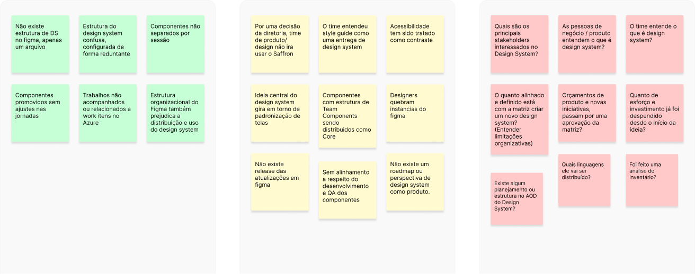
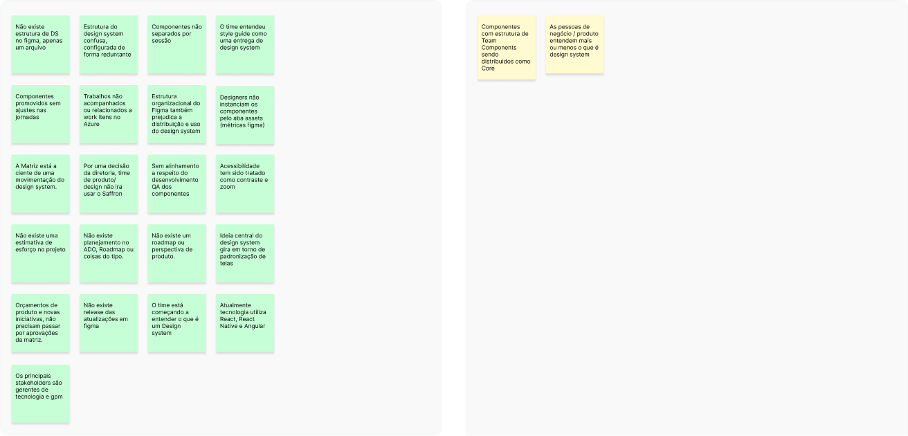
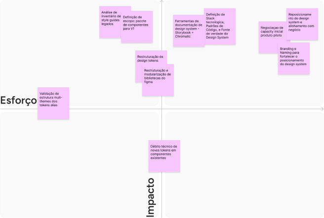
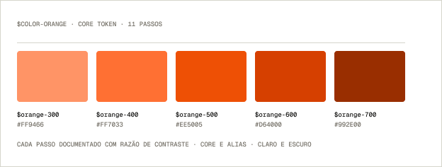
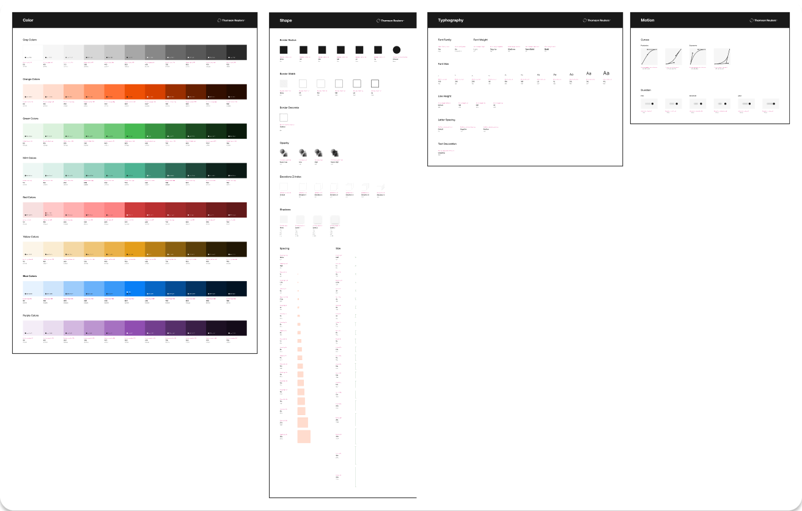
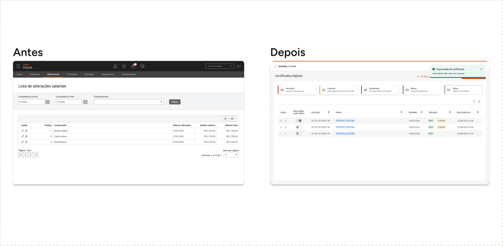
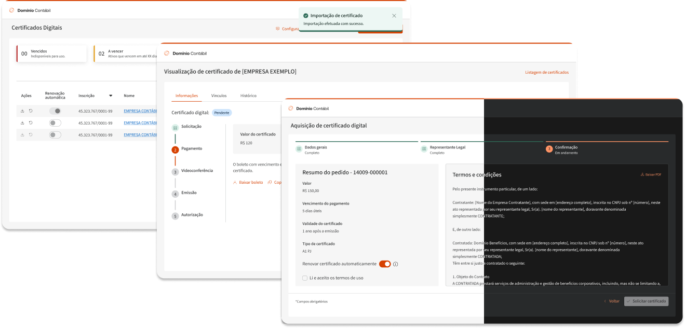
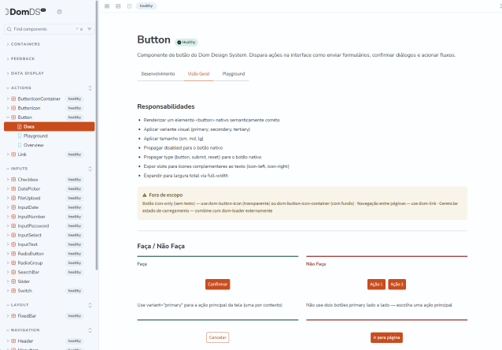
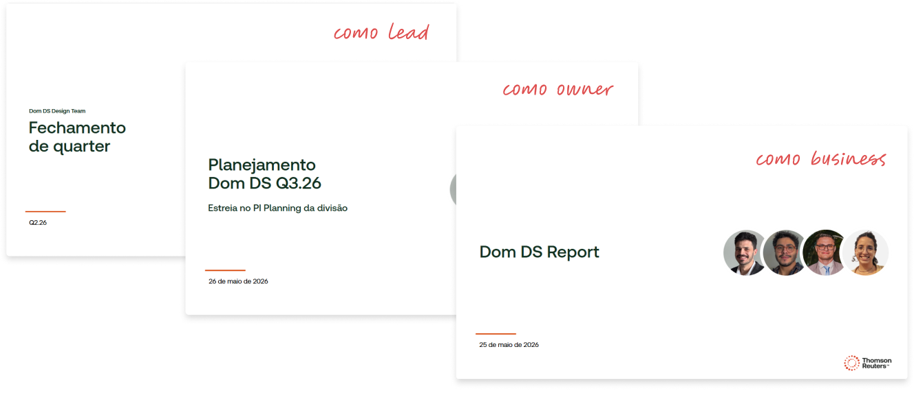

Dom DS
Reconstruir a fundação de um design system parado havia um ano, dentro de uma unidade que acabava de se desassociar do sistema global.
- Papel
- Design system: fundação, produto e Design Ops
- Período
- 2025 diagnóstico e fundação · 2026 em andamento
- Alcance
- Tax & Accounting Brazil · Domínio Contábil, Conta PJ, Benefícios e Contabilidade Digital
- Base
- 18 produtos com potencial de adoção · 4 imediatos, 2 pilotados
Contexto
Um ano de trabalho
sem fundação.
Fui contratado para atuar num design system que já estava em construção havia um ano. No onboarding ficou claro que a iniciativa não tinha estrutura: sem pessoas dedicadas, sem planejamento de produto, sem definição com engenharia, sem stack tecnológica e sem processo. No Figma não existia um design system, existia um arquivo.
O contexto era de desassociação. A unidade Tax & Accounting Brazil estava saindo dos sistemas globais, Bento UI e Saffron, e por decisão de diretoria não usaria o Saffron. Enquanto isso o time tratava style guide como entrega de design system e acessibilidade como contraste. A expressão design system já tinha se desgastado antes de o sistema existir.
- Iniciativa sem planejamento
- 1 ano
- Pessoas dedicadas
- 1
- Stack definida
- Nenhuma
Descoberta
O que entrou
no quarter.
A matriz de CSD foi o instrumento que sustentou a escolha de reconstruir a base em vez de continuar entregando componente.
Antes

Depois

Priorização
O que entrou
no quarter.
A matriz de esforço × impacto foi o instrumento que sustentou a escolha de reconstruir a base em vez de continuar entregando componente.

Decisões
Quatro decisões.
Quatro custos.
Cada decisão aqui vem com o que ela custou. O que foi cortado é justamente a parte que costuma sumir de um case.
-
01
Diagnosticar em três camadas
Decisão
Antes de propor solução, mapear o problema em operacional, tático e estratégico, separando bagunça de biblioteca de posicionamento institucional.
O que ficou de fora
A entrega rápida de componentes, que teria comprado paz no curto prazo e mantido a base frágil.
Consequência
O reposicionamento do design system virou item de trabalho explícito, no mesmo nível da reestruturação técnica.
-
02
Fundação antes de catálogo
Decisão
Montar uma matriz de esforço × impacto para o quarter e priorizar fundação: inventário dos style guides legados, escopo do pacote V1, stack, padrões de código e fonte de verdade.
O que ficou de fora
Continuar produzindo componentes sobre a base existente. A biblioteca legada Design System TR foi descontinuada, não mantida.
Consequência
As bibliotecas foram remodularizadas em cinco: Design Tokens, Assets, Core Web, Core App e Helpers.
-
03
Stack agnóstica a framework
Decisão
Adotar Web Components com Stencil para os produtos Angular e React, e Core App em React Native. Storybook com Chromatic como documentação.
O que ficou de fora
Uma biblioteca React nativa: mais rápida de escrever e incapaz de atender Angular sem duplicar o trabalho.
Consequência
O Core Web saiu de 45 para 67 componentes entre janeiro e junho de 2026, alta de 48%, com 45 em homologação e 22 em desenvolvimento.
-
04
Provar em produto, não em deck
Decisão
Negociar capacity para um produto piloto e entregar a área de Certificados Digitais com o sistema aplicado, em modo claro e escuro.
O que ficou de fora
A adoção ampla no primeiro ciclo. Um produto pilotado vale mais do que dezoito convencidos por apresentação.
Consequência
O balanço de Q1 e Q2 sustentou o pleito de recursos, o assento na PI Planning do Q3 e um sponsor para o Dom DS.
Exploração · Arquitetura de bibliotecas
Quatro formas de desenhar
a mesma coisa.
Cada variante defende um argumento diferente. Escolher é decidir o que a imagem precisa provar, não qual fica mais bonita.
Artefato
A base,
não o catálogo.
A entrega que sustenta o resto não é componente: é a arquitetura de tokens, com razão de contraste documentada passo a passo e estrutura alias preparada para múltiplos temas.

- Core Web · Stencil
- 45 → 67 componentes entre janeiro e junho de 2026 · 45 em homologação, 22 em desenvolvimento
- Arquitetura de tokens
- Cor, forma, tipografia e movimento · escala completa com contraste por passo e alias multi-tema
- Bibliotecas
- Design Tokens, Assets, Core Web, Core App e Helpers · Design System TR descontinuada

O sistema aplicado
O sistema
em produto.
O piloto de Certificados Digitais foi onde o Dom DS deixou de ser biblioteca e virou tela. Modo claro e escuro na mesma base de tokens alias.



Documentação em código
O sistema fora do Figma.
O Storybook documenta os componentes e permite consultar sua implementação. Enquanto as métricas de engenharia seguem em coleta, este registro mostra o sistema também em código.
Resultado
Números de junho de 2026. O caso está em andamento: as métricas de engenharia ainda estão sendo coletadas, e o que acompanhei foi o uso em design.
- Componentes Core Web · +48% em seis meses
- 45 → 67
- Instâncias do sistema em design
- 64.496
- Horas economizadas · produtividade 2,8x
- 3.225h
- Do time de design usando o sistema
- 29%
Comunicação executiva
Do dado ao orçamento.
Design system não morre por falta de componente. Morre quando ninguém acima consegue explicar por que ele existe. Metade deste trabalho foi técnico; a outra metade foi transformar uso em argumento de investimento.

Escalada do produto
2025
Ingresso de perfil sênior na iniciativa
Análise de contexto e plano de ação
Roadmap e priorização do quarter
Reestruturação do design system
Produto piloto entregue
Balanço de Q1 e Q2 e pleito de recursos
2026
Assento na PI Planning e sponsor
Conquistado
O que foi apresentado
- Balanço de Q1 e Q2 com métricas de uso
- Oportunidade de negócio: 18 produtos com potencial, 4 imediatos, 2 pilotados
- Plano de Q3 com escopo, recurso e risco
- Reposicionamento do design system na unidade
Para quem
- Diretoria de produto e de engenharia
- Coordenação de plataforma
- PI Planning da unidade
O que foi obtido
- Pleito de recursos aprovado
- Assento na PI Planning do Q3
- Sponsor dedicado para o Dom DS
O que eu faria diferente
O número que
eu não gosto.
29% do time de design usando é o dado mais desconfortável desta página e o mais importante dela. A fundação técnica ficou pronta antes de a adoção existir, que é exatamente o erro que eu já tinha visto acontecer em outro sistema.
A diferença é que dessa vez eu sei o que falta. As métricas de engenharia ficaram em aberto, ou seja, não sei quanto do sistema chegou a código de produto. Enquanto esse número não existir, o que eu tenho é uso em design, e uso em design não é adoção.
/ Próximo passo
Fale comigo
Produto, sistemas de design e times que precisam ganhar consistência sem perder velocidade.